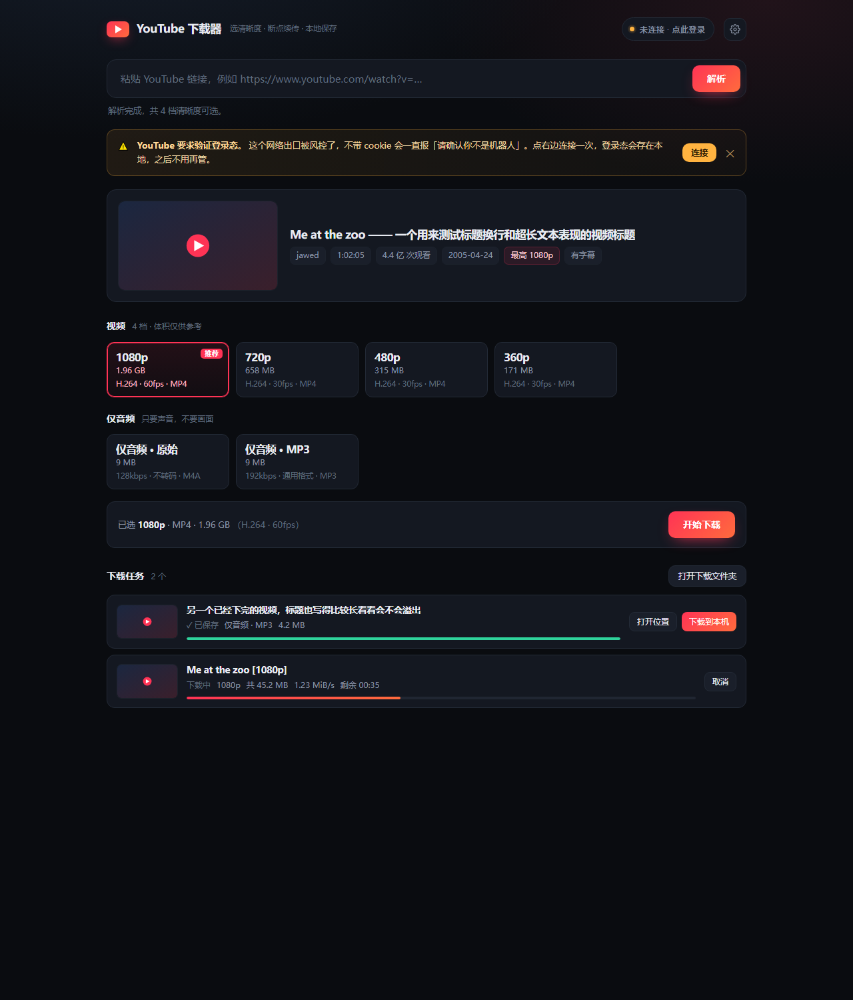

粘链接，解析出每一档分辨率，标明体积、编码、帧率，选一个就下。 纯 Python + yt-dlp，跑在你自己电脑上。

分辨率、体积、编码、帧率、容器全写在卡上，「推荐」标在 ≤1080p 里最高的一档，不用猜该下哪个。
下载、合并分两条进度，带速度与剩余时间。支持同时下两个、中途取消、下完直接打开位置。
YouTube 挡了机房/代理 IP 时，点一下弹出独立浏览器窗口登录一次，通过调试协议取明文 cookie，之后全自动。
# 1. 装依赖（Python 3.9+）
git clone https://github.com/baiqz/youtube-downloader.git
cd youtube-downloader
pip install -r requirements.txt
# 2. 放好 ffmpeg：丢进 bin/ 目录，或保证它在 PATH 里
# 3. Windows 双击 start.bat；其他系统
python app.py浏览器会自动打开 127.0.0.1:8799。第一次用记得在设置里填代理地址——拉 YouTube 需要能出海的网络。